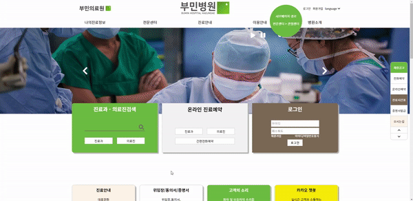
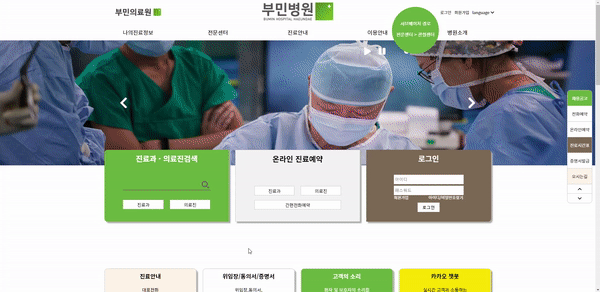

부민병원 반응형 리뉴얼
 

설명
사용자의 사용성을 고려하여 UI/UX를 설계하고 웹의 구조를 이해하며,
미디어 쿼리를 사용하여 사용자의 뷰포트에 대응하는 반응형 홈페이지 구현을 목표
구현페이지
메인, 서브페이지
주요기능
반응형 / 퀵메뉴 / 탑,바텀 버튼 / 애니메이션 / 탭메뉴 / Slick Slider
작업내용
기획 퍼블리싱 및 기능구현 100% 개인 작업으로 진행.
기간
2023.03.28 ~ 2023.04.03
Skills / Tools

반응형
설명
미디어 쿼리를 사용하여 모바일, 태블릿, 저해상도pc, 고해상도pc의
화면에 대응하여 UI/UX를 설계하였습니다.
attr 속성
설명
값을 가져오거나 수정하는 jQuery attr의 속성을 사용하여 링크를 걸었습니다.
Top, Bottom 버튼
설명
jQuery를 사용했습니다. preventDefault를 사용하여 기본동작을 해제시킨뒤 scrollTop으로 이동시키고 Bottom 버튼의 경우 document의 높이만큼 내려가게 구현했습니다.
퀵메뉴

설명
화면 중앙에 위치할수 있도록 계산을 한 값을 변수에 넣어 중앙에 위치시키고
스크롤을 하면 따라올수있게 애니메이션효과를 주었습니다.